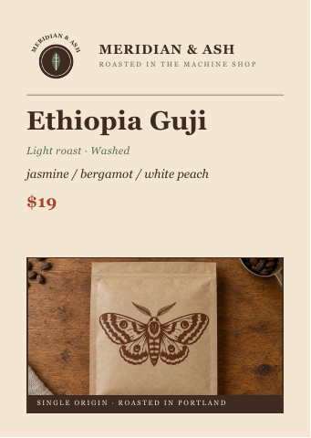

All pilot tasks · Brief · Human verifiers · Auto verifiers · Trajectory verifiers
Meridian and Ash - Sticker artwork production masters
Client brief
Coffee sticker collection: recover four designs, add two, prepare the cutting sheet
Four recovered designs + two new designs = one six-sticker collection for Meridian and Ash.
Please prepare
- Recovered sticker artwork: 4 files. The design preserves its photographed original: meridian_window_mark.jpg for the window mark, with its painted lettering traced as painted rather than reset in a typeface, and meridian_bag_moth.jpg, meridian_bag_pourover.jpg and meridian_bag_ridgeline.jpg for bag designs 1, 2 and 3 respectively. Interior negative space remains open at 55 mm.
- Original companion sticker: 2 files. The drawing belongs stylistically beside the recovered collection. Interior negative space remains open at 55 mm.
- Separate sticker cut contour: 6 files. The contour is offset 2.5 mm from the artwork edge. The minimum corner radius is 3 mm. This file contains one cutting contour.
- Transparent sticker proof: 6 files. The proof corresponds to its named vector artwork.
- Sticker imposed production sheet: 1 file. The cut contours leave at least 10 mm clear from the sheet edge. Adjacent cut contours have at least 6 mm gutter. The CutContour layer can be selected separately from the artwork.
This commission includes reconstruction of the four photographed originals. The two companion illustrations are new designs. Set every artwork SVG to 55 mm on its long edge; the cut contour adds its 2.5 mm outward offset. The PNG proofs use a 1600 x 1600 px viewing canvas and are not a substitute for the physical-scale SVGs.
Supplied identity artwork
This commission explicitly includes paid reconstruction of the window mark and three bag illustrations from the supplied photographs. Those photographs are tracing references, not ready-to-place logos. They are intentionally retained: supplying finished vectors would remove the central work requested. No redesign of the four originals is authorised; the two companion stickers are the original-design portion.
What stays fixed
Recover the four supplied painted/printed designs faithfully as vector paths. Preserve photographed lettering rather than retyping it. Follow the 55 mm artwork scale, 2.5 mm contour offset, 3 mm minimum corner radius and printer sheet spacing.
Your design decisions
Draw two original companion illustrations with subject matter and visual rhythm that fit the coffee collection. Choose imposition within the printer's clearances. Newly set lettering follows the supplied type system; photographed lettering retains its original shape.
Delivery and fonts
Use the placement and export instructions listed with each requested file below. The downloadable OFL fonts in Source assets are the current typefaces for this commission; the typography card gives their roles and weights.
Brand identity
Meridian and Ash
Meridian and Ash roast single origin coffee in a converted machine shop and sell it across their own counter, at two farmers markets and to about forty wholesale accounts. The merchandise table is half the fun: stickers people put on laptops and water bottles because they actually like the mark. The whole point is a range that feels made by hand, not bought by the case.
Audience
Cafe regulars twenty to thirty five who buy a sticker at the till without deciding first, and wholesale buyers who hand them out with orders.
Positioning
Impulse retail, three dollars a single and nine dollars a four pack. Priced to be handed out by the fistful, so the range has to read as abundant rather than precious.
Palette
Roast Brown
#3E2A20 mandatory for the window mark wordmark, the moth design and type on a light groundThe main ink of the painted MERIDIAN & ASH wordmark in meridian_window_mark.jpg and of the moth printed on meridian_bag_moth.jpg; all type and labels on a light ground, as the wordmark and origin lines on meridian_shelfcard_2025.pdf. May be the main ink of a companion drawing.Kraft
#C8A97E optional accentA solid backing shape behind a drawing, recalling the kraft bags photographed in meridian_bag_moth.jpg, meridian_bag_pourover.jpg and meridian_bag_ridgeline.jpg, or detail reversed out of an ink. Never the main ink of a drawing and never type.Ash Green
#5B6B54 mandatory for the window mark roundel and the pour-over designThe filled roundel painted in meridian_window_mark.jpg and the pour-over printed on meridian_bag_pourover.jpg; a secondary type line such as the tagline or roast line, as on meridian_shelfcard_2025.pdf. May be the main ink of a companion drawing.Warm Cream
#F3E7D3 optional; mandatory for the leaf and hairline ring of the window mark and for type reversed out of roast brown or ash greenThe ash leaf and fine hairline ring painted in meridian_window_mark.jpg; type and fine detail reversed out of Roast Brown or Ash Green, as the caption set on the Roast Brown band and the ring and leaf veins on the roundel of meridian_shelfcard_2025.pdf; a fine line; or a solid backing shape. Never the main ink of a drawing.Brick Red
#A8442E mandatory for the ridge line designThe main ink of the ridge line printed on meridian_bag_ridgeline.jpg. May be the main ink of a companion drawing. On meridian_shelfcard_2025.pdf it sets only the price; it is not a type colour on the stickers or gang sheet.Ink Black
#201914 optional accentFine detail inside a drawing only, no more than 5% of a sticker's inked area. Never the main ink, a backing shape, type or the wordmark; no supplied brand file uses it.Colour rules
- Distribution
- Each recovered design keeps the ink it was painted or printed in: Roast Brown for the wordmark in meridian_window_mark.jpg and the moth on meridian_bag_moth.jpg, Ash Green for the roundel in meridian_window_mark.jpg and the pour-over on meridian_bag_pourover.jpg, Warm Cream for the leaf and hairline ring in meridian_window_mark.jpg, Brick Red for the ridge line on meridian_bag_ridgeline.jpg. Each companion takes its main ink from Roast Brown, Ash Green and Brick Red. Kraft and Warm Cream are secondary: backing shapes, detail reversed out of an ink, or fine lines such as a hairline ring, never the main ink. Ink Black is fine detail only, no more than 5% of a sticker's inked area. Type on a light ground is Roast Brown, or Ash Green for a secondary line; type on Roast Brown or Ash Green is Warm Cream, as on meridian_shelfcard_2025.pdf. Sticker backgrounds stay transparent. Palette hex values define sRGB source colours. In the print PDF, convert them with PSOcoated_v3.icc; evaluate the colour-managed proof, not literal RGB hex values inside the CMYK file.
- Opacity
- Every palette colour on the stickers, proofs and gang sheet is used solid, at 100% opacity; no tint, transparency, gradient, shadow or blend mode. A proof is transparent only outside the artwork and in its open, uninked negative space; every inked area is fully opaque, and partial transparency occurs only as anti-aliasing along edges, with no white or coloured rectangle behind it.
- Not allowed
- No colour outside the six palette hexes for any artwork, type, backing shape, label or mark. The cut paths on the CutContour layer are production lines, not artwork, and are exempt. No colour is sampled from a photograph.
- Photography
- No photograph appears in any deliverable. meridian_window_mark.jpg, meridian_bag_moth.jpg, meridian_bag_pourover.jpg and meridian_bag_ridgeline.jpg are tracing references only: each ink is matched to its palette hex rather than sampled.
Typography
// Type system
Meridian and Ash
Roasted in the machine shop
Aa
DM Serif Display
Aa
Libre Franklin
The samples load the supplied font files. Their display size is reduced for this guide; use the stated deliverable settings, not the on-screen sample size. Fonts and their OFL licences are downloadable in Source assets.
Apply these roles to newly set text in the requested deliverables. Preserve supplied logo artwork rather than retyping it. Recovered artwork retains its photographed lettering.
Tracking in units means thousandths of an em; 1 pt is 1/72 inch. Pixel settings apply at final exported size. Font size is not cap height.
Use the attached OFL font files at the named weights. These files replace unavailable commercial fonts for this commission. Do not substitute another family or simulate a missing weight.
01
Display / H1 · arched wordmark
MERIDIAN & ASH
The 55 mm sticker setting, near 150 px cap height in a 1600 px proof. MERIDIAN and ASH arch on a fixed 40 degree curve and the ampersand between them is set at 1.6 times their cap height, hanging below the arc into the artwork. Tracking opens slightly on the curve only so the letters stay evenly spaced around it.
02
Subheading / H2 · counter card and four pack headers
SINGLES AND FOUR PACKS
Set flat, off the arc. Where an ampersand appears here it still runs at 1.6 times cap height, hanging below the baseline.
03
Body · sticker and supporting copy
Pull one off the sheet and come back for the other three.
The supporting line under the wordmark and every line of sticker and counter copy. Plain, warm, a little wry, never precious.
04
Fine print · slug labels
GANG SHEET · 55 MM · CUT CONTOUR
Gang sheet capitals, die line notes and slug labels in the artwork margin. Libre Franklin Bold 700 only, never DM Serif Display.
- Never set the ampersand at cap height. It is always 1.6 times the cap height of MERIDIAN and ASH.
- The ampersand always hangs below the arc, into the artwork, never sitting on the baseline.
- MERIDIAN and ASH always arch on a fixed 40 degree curve, at every size.
- DM Serif Display Regular is display only; Libre Franklin Regular 400 sets sticker copy and Libre Franklin Bold 700 the gang sheet capitals.
- Keep the range reading abundant rather than precious: it is priced to be handed out by the fistful.
- Hand made, not franchise: the artwork is drawn once and reused, never redrawn slightly differently each batch.
Voice
Plain, warm, a little wry, never precious. Example line: Pull one off the sheet, stick it on your laptop, come back for the other three.
Existing brand materials
This commission explicitly includes paid reconstruction of the window mark and three bag illustrations from the supplied photographs. Those photographs are tracing references, not ready-to-place logos. They are intentionally retained: supplying finished vectors would remove the central work requested. No redesign of the four originals is authorised; the two companion stickers are the original-design portion.
Source assets (13)


origin,farm,process,roast,tasting_notes,price Ethiopia Guji,Dancho Washing Station,Washed,Light,jasmine / bergamot / white peach,19 Colombia Huila,Finca Alto Sereno,Washed,Medium,red apple / cane sugar / cocoa,18 Guatemala Huehuetenango,Finca La Cima Verde,Washed,Medium,milk chocolate / orange / toffee — long syrupy finish with a hint of baking spice,18 Kenya Nyeri,Ngaru Factory,Washed,Light-Medium,blackcurrant / tomato / brown sugar,21 Sumatra Aceh,Ceria Gayo Cooperative,Wet-hulled,Dark,cedar /
MERIDIAN AND ASH — STICKER PRINTER SPEC (what our printer sent when we asked what they need) SHEET Gang sheet size: 305 x 457 mm (12 x 18 in), white gloss vinyl, solvent print. Safe margin from sheet edge: 10 mm. No artwork and no cut inside this margin.

meridian_shelfcard_2025.pdf
PDF · Data · 354.7 KB

Copyright 2014-2018 Adobe (http://www.adobe.com/), with Reserved Font Name 'Source'. All Rights Reserved. Source is a trademark of Adobe in the United States and/or other countries. Copyright 2019 Google LLC. This Font Software is licensed under the SIL Open Font License, Version 1.1. This license is copied below, and is also available with a FAQ at: http://scripts.sil.org/OFL
Copyright 2020 The Libre Franklin Project Authors (https://github.com/googlefonts/Libre-Franklin) This Font Software is licensed under the SIL Open Font License, Version 1.1. This license is copied below, and is also available with a FAQ at: https://openfontlicense.org

PSOcoated_v3_info.pdf
PDF · Print profile documentation · 35.2 KB
ECI PSO Coated v3 profile for the commissioned print PDF.
Requested deliverables (19)
Recovered sticker artwork
Recovered sticker artwork - Window mark
recovered-sticker-window-mark.svgSVG · Transparent background: YesSource: meridian_window_mark.jpg
- Purpose: Recover this existing design as reusable production vector artwork.
- Placement: 55 mm merchandise sticker artwork
- Audience: Coffee customers and the sticker printer
- Trace the single photograph assigned to this sticker, preserving its distinctive painted or printed shapes.
- Use editable vector paths, an explicit viewBox and physical long edge of 55 mm; no embedded raster image or opaque background rectangle.
- Export: SVG with editable vector paths and an explicit viewBox; no embedded raster image; transparent uninked areas. Set physical units in millimetres; artwork long edge is 55 mm. Cut-contour dimensions include the 2.5 mm outward offset.
Recovered sticker artwork - Bag design 1
recovered-sticker-bag-design-1.svgSVG · Transparent background: YesSource: meridian_bag_moth.jpg
- Purpose: Recover this existing design as reusable production vector artwork.
- Placement: 55 mm merchandise sticker artwork
- Audience: Coffee customers and the sticker printer
- Trace the single photograph assigned to this sticker, preserving its distinctive painted or printed shapes.
- Use editable vector paths, an explicit viewBox and physical long edge of 55 mm; no embedded raster image or opaque background rectangle.
- Export: SVG with editable vector paths and an explicit viewBox; no embedded raster image; transparent uninked areas. Set physical units in millimetres; artwork long edge is 55 mm. Cut-contour dimensions include the 2.5 mm outward offset.
Recovered sticker artwork - Bag design 2
recovered-sticker-bag-design-2.svgSVG · Transparent background: YesSource: meridian_bag_pourover.jpg
- Purpose: Recover this existing design as reusable production vector artwork.
- Placement: 55 mm merchandise sticker artwork
- Audience: Coffee customers and the sticker printer
- Trace the single photograph assigned to this sticker, preserving its distinctive painted or printed shapes.
- Use editable vector paths, an explicit viewBox and physical long edge of 55 mm; no embedded raster image or opaque background rectangle.
- Export: SVG with editable vector paths and an explicit viewBox; no embedded raster image; transparent uninked areas. Set physical units in millimetres; artwork long edge is 55 mm. Cut-contour dimensions include the 2.5 mm outward offset.
Recovered sticker artwork - Bag design 3
recovered-sticker-bag-design-3.svgSVG · Transparent background: YesSource: meridian_bag_ridgeline.jpg
- Purpose: Recover this existing design as reusable production vector artwork.
- Placement: 55 mm merchandise sticker artwork
- Audience: Coffee customers and the sticker printer
- Trace the single photograph assigned to this sticker, preserving its distinctive painted or printed shapes.
- Use editable vector paths, an explicit viewBox and physical long edge of 55 mm; no embedded raster image or opaque background rectangle.
- Export: SVG with editable vector paths and an explicit viewBox; no embedded raster image; transparent uninked areas. Set physical units in millimetres; artwork long edge is 55 mm. Cut-contour dimensions include the 2.5 mm outward offset.
Original companion sticker
Original companion sticker - Companion 1
new-sticker-companion-1.svgSVG · Transparent background: Yes- Purpose: Extend the established collection with one original companion design.
- Placement: 55 mm merchandise sticker artwork
- Audience: Coffee customers
- Create one original illustration that belongs beside the recovered designs.
- Supply editable vector paths at 55 mm long edge with open negative space, using the specified palette.
- Export: SVG with editable vector paths and an explicit viewBox; no embedded raster image; transparent uninked areas. Set physical units in millimetres; artwork long edge is 55 mm. Cut-contour dimensions include the 2.5 mm outward offset.
Original companion sticker - Companion 2
new-sticker-companion-2.svgSVG · Transparent background: Yes- Purpose: Extend the established collection with one original companion design.
- Placement: 55 mm merchandise sticker artwork
- Audience: Coffee customers
- Create one original illustration that belongs beside the recovered designs.
- Supply editable vector paths at 55 mm long edge with open negative space, using the specified palette.
- Export: SVG with editable vector paths and an explicit viewBox; no embedded raster image; transparent uninked areas. Set physical units in millimetres; artwork long edge is 55 mm. Cut-contour dimensions include the 2.5 mm outward offset.
Separate sticker cut contour
Separate sticker cut contour - Window mark
sticker-cut-window-mark.svgSVG · Transparent background: Yes · Closed vector paths: Yes- Purpose: Give the cutter a separable outline for this named sticker.
- Placement: Production kiss-cut path
- Audience: Sticker print and cutting operator
- Provide exactly one closed outer contour for the corresponding artwork, offset 2.5 mm outward with corners at least 3 mm radius.
- Keep this contour separate from the illustration; no interior cut-outs are requested.
- Export: SVG with editable vector paths and an explicit viewBox; no embedded raster image; transparent uninked areas. Set physical units in millimetres; artwork long edge is 55 mm. Cut-contour dimensions include the 2.5 mm outward offset.
Separate sticker cut contour - Bag design 1
sticker-cut-bag-design-1.svgSVG · Transparent background: Yes · Closed vector paths: Yes- Purpose: Give the cutter a separable outline for this named sticker.
- Placement: Production kiss-cut path
- Audience: Sticker print and cutting operator
- Provide exactly one closed outer contour for the corresponding artwork, offset 2.5 mm outward with corners at least 3 mm radius.
- Keep this contour separate from the illustration; no interior cut-outs are requested.
- Export: SVG with editable vector paths and an explicit viewBox; no embedded raster image; transparent uninked areas. Set physical units in millimetres; artwork long edge is 55 mm. Cut-contour dimensions include the 2.5 mm outward offset.
Separate sticker cut contour - Bag design 2
sticker-cut-bag-design-2.svgSVG · Transparent background: Yes · Closed vector paths: Yes- Purpose: Give the cutter a separable outline for this named sticker.
- Placement: Production kiss-cut path
- Audience: Sticker print and cutting operator
- Provide exactly one closed outer contour for the corresponding artwork, offset 2.5 mm outward with corners at least 3 mm radius.
- Keep this contour separate from the illustration; no interior cut-outs are requested.
- Export: SVG with editable vector paths and an explicit viewBox; no embedded raster image; transparent uninked areas. Set physical units in millimetres; artwork long edge is 55 mm. Cut-contour dimensions include the 2.5 mm outward offset.
Separate sticker cut contour - Bag design 3
sticker-cut-bag-design-3.svgSVG · Transparent background: Yes · Closed vector paths: Yes- Purpose: Give the cutter a separable outline for this named sticker.
- Placement: Production kiss-cut path
- Audience: Sticker print and cutting operator
- Provide exactly one closed outer contour for the corresponding artwork, offset 2.5 mm outward with corners at least 3 mm radius.
- Keep this contour separate from the illustration; no interior cut-outs are requested.
- Export: SVG with editable vector paths and an explicit viewBox; no embedded raster image; transparent uninked areas. Set physical units in millimetres; artwork long edge is 55 mm. Cut-contour dimensions include the 2.5 mm outward offset.
Separate sticker cut contour - Companion 1
sticker-cut-companion-1.svgSVG · Transparent background: Yes · Closed vector paths: Yes- Purpose: Give the cutter a separable outline for this named sticker.
- Placement: Production kiss-cut path
- Audience: Sticker print and cutting operator
- Provide exactly one closed outer contour for the corresponding artwork, offset 2.5 mm outward with corners at least 3 mm radius.
- Keep this contour separate from the illustration; no interior cut-outs are requested.
- Export: SVG with editable vector paths and an explicit viewBox; no embedded raster image; transparent uninked areas. Set physical units in millimetres; artwork long edge is 55 mm. Cut-contour dimensions include the 2.5 mm outward offset.
Separate sticker cut contour - Companion 2
sticker-cut-companion-2.svgSVG · Transparent background: Yes · Closed vector paths: Yes- Purpose: Give the cutter a separable outline for this named sticker.
- Placement: Production kiss-cut path
- Audience: Sticker print and cutting operator
- Provide exactly one closed outer contour for the corresponding artwork, offset 2.5 mm outward with corners at least 3 mm radius.
- Keep this contour separate from the illustration; no interior cut-outs are requested.
- Export: SVG with editable vector paths and an explicit viewBox; no embedded raster image; transparent uninked areas. Set physical units in millimetres; artwork long edge is 55 mm. Cut-contour dimensions include the 2.5 mm outward offset.
Transparent sticker proof
Transparent sticker proof - Window mark
sticker-proof-window-mark.pngPNG · 1600 x 1600 px · Transparent background: Yes- Purpose: Let the client and printer inspect this sticker without a background box.
- Placement: Digital transparent artwork proof, not a production raster replacement
- Audience: Client and sticker printer
- Render the corresponding named SVG only, with genuine alpha transparency outside the artwork and inside uninked negative space.
- Use the required 1600 x 1600 px canvas; the corresponding SVG remains the 55 mm physical-size master.
- Export: PNG with genuine alpha transparency; sRGB; exact pixel dimensions.
Transparent sticker proof - Bag design 1
sticker-proof-bag-design-1.pngPNG · 1600 x 1600 px · Transparent background: Yes- Purpose: Let the client and printer inspect this sticker without a background box.
- Placement: Digital transparent artwork proof, not a production raster replacement
- Audience: Client and sticker printer
- Render the corresponding named SVG only, with genuine alpha transparency outside the artwork and inside uninked negative space.
- Use the required 1600 x 1600 px canvas; the corresponding SVG remains the 55 mm physical-size master.
- Export: PNG with genuine alpha transparency; sRGB; exact pixel dimensions.
Transparent sticker proof - Bag design 2
sticker-proof-bag-design-2.pngPNG · 1600 x 1600 px · Transparent background: Yes- Purpose: Let the client and printer inspect this sticker without a background box.
- Placement: Digital transparent artwork proof, not a production raster replacement
- Audience: Client and sticker printer
- Render the corresponding named SVG only, with genuine alpha transparency outside the artwork and inside uninked negative space.
- Use the required 1600 x 1600 px canvas; the corresponding SVG remains the 55 mm physical-size master.
- Export: PNG with genuine alpha transparency; sRGB; exact pixel dimensions.
Transparent sticker proof - Bag design 3
sticker-proof-bag-design-3.pngPNG · 1600 x 1600 px · Transparent background: Yes- Purpose: Let the client and printer inspect this sticker without a background box.
- Placement: Digital transparent artwork proof, not a production raster replacement
- Audience: Client and sticker printer
- Render the corresponding named SVG only, with genuine alpha transparency outside the artwork and inside uninked negative space.
- Use the required 1600 x 1600 px canvas; the corresponding SVG remains the 55 mm physical-size master.
- Export: PNG with genuine alpha transparency; sRGB; exact pixel dimensions.
Transparent sticker proof - Companion 1
sticker-proof-companion-1.pngPNG · 1600 x 1600 px · Transparent background: Yes- Purpose: Let the client and printer inspect this sticker without a background box.
- Placement: Digital transparent artwork proof, not a production raster replacement
- Audience: Client and sticker printer
- Render the corresponding named SVG only, with genuine alpha transparency outside the artwork and inside uninked negative space.
- Use the required 1600 x 1600 px canvas; the corresponding SVG remains the 55 mm physical-size master.
- Export: PNG with genuine alpha transparency; sRGB; exact pixel dimensions.
Transparent sticker proof - Companion 2
sticker-proof-companion-2.pngPNG · 1600 x 1600 px · Transparent background: Yes- Purpose: Let the client and printer inspect this sticker without a background box.
- Placement: Digital transparent artwork proof, not a production raster replacement
- Audience: Client and sticker printer
- Render the corresponding named SVG only, with genuine alpha transparency outside the artwork and inside uninked negative space.
- Use the required 1600 x 1600 px canvas; the corresponding SVG remains the 55 mm physical-size master.
- Export: PNG with genuine alpha transparency; sRGB; exact pixel dimensions.
Sticker imposed production sheet
Sticker imposed production sheet
gang-sheet.pdfPDF · 305 x 457 mm · 1 page- Purpose: Supply one sheet the printer can separate into artwork and cutting paths.
- Placement: 305 x 457 mm white-gloss-vinyl production sheet
- Audience: Sticker printer
- Place the six designs with their corresponding cut paths on a separable CutContour layer.
- Keep cut contours at least 10 mm from the sheet edge and 6 mm apart; preserve the 55 mm artwork scale.
- Export: Production PDF/X-4 with embedded fonts or outlined lettering, CMYK artwork and the supplied PSO Coated v3 output intent. Convert palette colours from sRGB using this profile; preserve named spot cut lines separately. 305 x 457 mm page, 55 mm artwork scale, 10 mm sheet clearance and 6 mm contour gutters; CutContour remains a separate named layer and spot colour. PSO Coated v3 is the agreed CMYK exchange space, not a solvent/vinyl device profile: the printer handles the final RIP conversion and physical proof for white gloss vinyl.